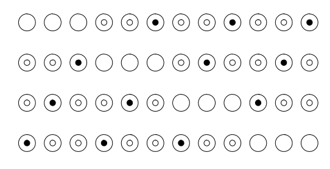
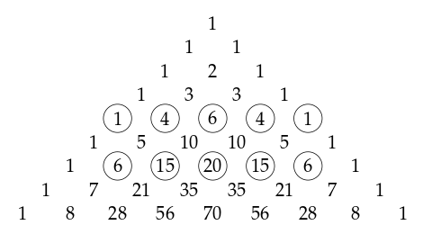
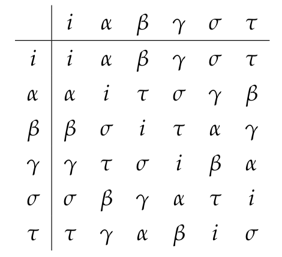
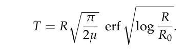

Books and articles

These are explorations of themes and ideas that came up while teaching mathematics to high school students. Right click to download them.
Books
Patterns in Pascal’s Triangle (pdf) 
Work through all 92 problems in this little book and you’ll be an expert on Pascal’s Triangle. I do some of the problems, you do the others. This material and teaching method was developed for a high school summer course.

Articles
The Anharmonic Group and Functional Equations (pdf)
Inside-Out: Recursion vs. Functions (DRAFT 1)
Rational Geometry with Racket (pdf)
Thinking about Quaternions (pdf)
Three Short and Beautiful Proofs (pdf)

Computing Binomial Numbers by Recursion (pdf)
A Study of Binomial Numbers using Racket (pdf)
An Application of the Error Function to Mechanics (pdf)